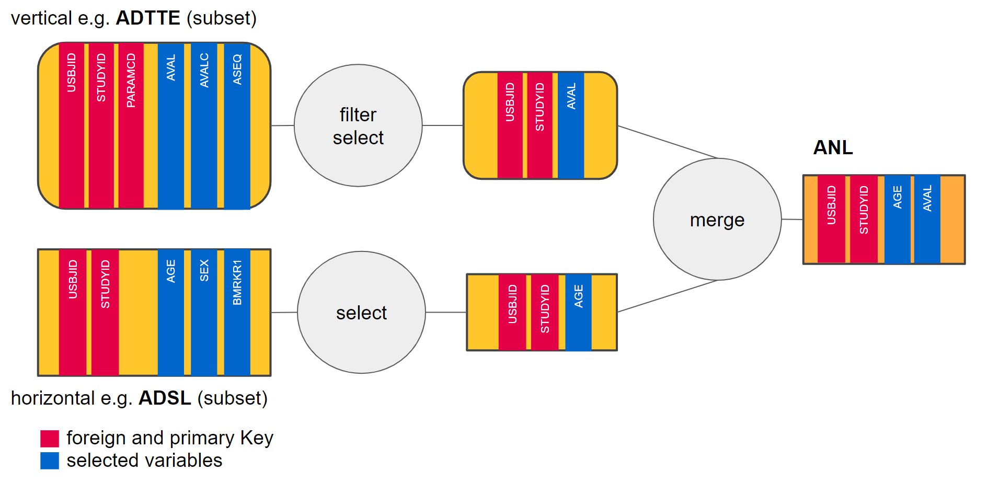

Combining data-extract with data-merge
NEST coreDev
2022-05-03
data-extract-merge.RmdCombining data-extract with data-merge
teal.transform provides
merge_expression_srv which converts
data_extract_srv into R expression to transform data for
analytical purposes. For example, we may wish to select AGE
from ADSL and select AVAL from
ADTTE filtered for rows where PARAMCD is
OS and merge the results (using the primary keys) to create
an analysis dataset ANL to be used in the module, as this
diagram shows:

In the following code block we create a
data_extract_spec object per dataset as illustrated
above.
library(teal.transform)
#> Loading required package: magrittr
library(shiny)
adsl_extract <- teal.transform::data_extract_spec(
dataname = "ADSL",
select = select_spec(
label = "Select variable:",
choices = c("AGE", "BMRKR1"),
selected = "AGE",
multiple = TRUE,
fixed = FALSE
)
)
adtte_extract <- teal.transform::data_extract_spec(
dataname = "ADTTE",
select = select_spec(
choices = c("AVAL", "ASEQ"),
selected = "AVAL",
multiple = TRUE,
fixed = FALSE
),
filter = filter_spec(
vars = "PARAMCD",
choices = c("CRSD", "EFS", "OS", "PFS"),
selected = "OS"
)
)
data_extracts <- list(adsl_extract = adsl_extract, adtte_extract = adtte_extract)Example module
Here, we create the merge_ui and the
merge_srv functions which will be used to create the
ui and the srv components of the shiny app,
respectively.
merge_ui <- function(id, data_extracts) {
ns <- NS(id)
teal.widgets::standard_layout(
output = teal.widgets::white_small_well(
verbatimTextOutput(ns("expr")),
dataTableOutput(ns("data"))
),
encoding = div(
teal.transform::data_extract_ui(
ns("adsl_extract"), # must correspond with data_extracts list names
label = "ADSL extract",
data_extracts[[1]]
),
teal.transform::data_extract_ui(
ns("adtte_extract"), # must correspond with data_extracts list names
label = "ADTTE extract",
data_extracts[[2]]
)
)
)
}
merge_srv <- function(id, datasets, data_extracts, join_keys) {
moduleServer(id, function(input, output, session) {
selector_list <- teal.transform::data_extract_multiple_srv(data_extracts, datasets, join_keys)
merged_data <- teal.transform::merge_expression_srv(
selector_list = selector_list,
datasets = datasets,
join_keys = join_keys,
merge_function = "dplyr::left_join"
)
ANL <- reactive({ # nolint
eval(envir = list2env(datasets), expr = as.expression(merged_data()$expr))
})
output$expr <- renderText(paste(merged_data()$expr, collapse = "\n"))
output$data <- renderDataTable(ANL())
})
}Output from data_extract_srv (reactive)
should be passed to merge_expression_srv together with
datasets (list of data.frame objects) and
join_keys list. merge_expression_srv returns a
reactive list containing merge expression and information needed to
perform the transformation - see more in
merge_expression_srv documentation.
Example data
data_extract_srv module depends on either a list of
reactive or non-reactive data.frame objects. Here, we show
the usage of a list of data.frame objects as input to
datasets where a list of necessary join keys per
data.frame object is required:
# Define data.frame objects
ADSL <- scda::synthetic_cdisc_data("latest")$adsl # nolint
ADTTE <- scda::synthetic_cdisc_data("latest")$adtte # nolint
# create a list of data.frame objects
datasets <- list(ADSL = ADSL, ADTTE = ADTTE)
# create join_keys
join_keys <- teal.data::join_keys(
teal.data::join_key("ADSL", "ADSL", c("STUDYID", "USUBJID")),
teal.data::join_key("ADSL", "ADTTE", c("STUDYID", "USUBJID")),
teal.data::join_key("ADTTE", "ADTTE", c("STUDYID", "USUBJID", "PARAMCD"))
)